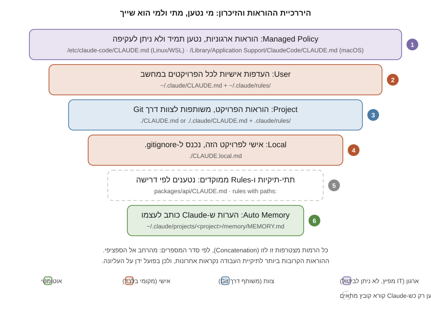

חלק ג | פרק 15
CLAUDE.md
קובץ CLAUDE.md הוא הקובץ החשוב ביותר שתיצרו בפרויקט שעובד עם Claude Code: ההוראות הקבועות ש-Claude קורא בפתיחת כל Session. בפרק הזה נכיר את כל רמות ה-Scope (ארגון, משתמש, פרויקט, מקומי ומקונן), את סדר הטעינה והעדיפות, את מנגנון ה-Imports ואת תיקיית .claude/rules/, נלמד מה שייך לקובץ ומה לא, נבחן ונשפר את ה-CLAUDE.md האמיתי של פרויקט TaskFlow, ונבנה דוגמה מתקדמת מלאה ל-Monorepo.
מהו CLAUDE.md ואיזו בעיה הוא פותר
כפי שראינו בפרק 14, כל Session מתחיל עם Context טרי: Claude לא זוכר שום דבר מהשיחות הקודמות. בלי מנגנון קבוע, הייתם צריכים להסביר מחדש בכל בוקר איך מריצים בדיקות, אילו מוסכמות קוד נהוגות בצוות, ולמה אסור לגעת בתיקייה מסוימת. CLAUDE.md הוא הפתרון: קובץ Markdown רגיל שאתם כותבים פעם אחת, ו-Claude Code טוען אוטומטית לתוך ה-Context בתחילת כל שיחה.
חשוב להבין נקודה מתועדת ולא מובנת מאליה: תוכן הקובץ מוזרק כהודעת משתמש אחרי ה-System Prompt, לא כחלק ממנו. Claude קורא אותו ומשתדל לציית, אבל אין אכיפה קשיחה, במיוחד מול הוראות מעורפלות או סותרות. לכן ההנחיה הרשמית: הוראות התנהגות שייכות ל-CLAUDE.md; חסימות אמיתיות (למשל "אסור להריץ rm -rf") שייכות ל-Permissions ול-Hooks, שאוכפים ברמת הקוד בלי לשאול את המודל (פרקים 18 ו-22).
מתי מוסיפים שורה לקובץ? התיעוד נותן ארבעה טריגרים מצוינים: Claude חוזר על אותה טעות פעם שנייה; Code Review תופס משהו ש-Claude "היה צריך לדעת"; אתם מקלידים בצ'אט תיקון שכבר הקלדתם ב-Session קודם; או שגם מפתח חדש בצוות היה זקוק לאותו הסבר כדי להיות פרודוקטיבי.
מתי להשתמש ומתי לא
השתמשו ב-CLAUDE.md לכל עובדה או כלל ש-Claude צריך להחזיק בכל שיחה, בכל משימה: פקודות, מוסכמות, גבולות. אל תשתמשו בו כשקיים כלי מתאים יותר: הוראה שרלוונטית רק לחלק מהקוד שייכת ל-Rule ממוקד נתיב או לקובץ מקונן; נוהל רב-שלבי שמופעל מדי פעם שייך ל-Skill; ידע ש-Claude צובר תוך כדי עבודה שייך ל-Auto Memory; ופעולה שחייבת לקרות בנקודה קבועה (למשל Lint אחרי כל עריכה) שייכת ל-Hook. הבחירה הזאת אינה קוסמטית: כל שורה ב-CLAUDE.md עולה Tokens בכל Session, וכל שורה במקום הנכון עולה רק כשצריך אותה.
רמות ה-Scope: מי, איפה ובשביל מה
קובצי הוראות יכולים לחיות בכמה מקומות, וכל מקום קובע היקף אחר. אלה הרמות המתועדות, מהרחבה לספציפית:
| רמה | מיקום | למה משמשת | משותפת עם | מתי נטענת |
|---|---|---|---|---|
| Managed Policy | macOS: /Library/Application Support/ClaudeCode/CLAUDE.mdLinux/WSL: /etc/claude-code/CLAUDE.mdWindows: C:\Program Files\ClaudeCode\CLAUDE.md |
הוראות ארגוניות שמפיץ צוות IT/DevOps: תקני קוד, מדיניות אבטחה, דרישות רגולציה | כל המשתמשים בארגון | בפתיחה, תמיד; לא ניתנת לביטול על ידי המשתמש |
| User | ~/.claude/CLAUDE.md |
העדפות אישיות לכל הפרויקטים: סגנון, קיצורי דרך אישיים | רק אתם, בכל הפרויקטים | בפתיחה |
| Project | ./CLAUDE.md או ./.claude/CLAUDE.md |
הוראות הפרויקט: ארכיטקטורה, תקנים, פקודות, Workflows | הצוות, דרך Git | בפתיחה |
| Local | ./CLAUDE.local.md |
העדפות אישיות לפרויקט הזה: כתובות Sandbox, נתוני בדיקה מועדפים. מוסיפים ל-.gitignore |
רק אתם, בפרויקט הזה | בפתיחה |
| מקונן (Nested) | sub/dir/CLAUDE.md |
הוראות ספציפיות לחלק של הפרויקט, למשל חבילה ב-Monorepo | הצוות, דרך Git | לפי דרישה: כש-Claude קורא קובץ באותה תת-תיקייה |
שימו לב להבחנת הטעינה: קובצי CLAUDE.md ו-CLAUDE.local.md בתיקיית העבודה ובתיקיות שמעליה נטענים במלואם בפתיחה. קבצים בתת-תיקיות מתחת לתיקיית העבודה נטענים רק כש-Claude ניגש לקבצים שם. לארגונים יש גם דרך שנייה להפיץ הוראות: המפתח claudeMd בתוך managed-settings.json, שמכובד רק ברמת ה-Managed.
לארגונים חשוב גם לדעת מה CLAUDE.md ארגוני אינו: הוא הנחיה, לא אכיפה. התיעוד מפריד במפורש בין שני הערוצים:
| הצורך | הכלי הנכון |
|---|---|
| חסימת כלים, פקודות או נתיבים | Managed Settings: permissions.deny |
| בידוד Sandbox מחייב | Managed Settings: sandbox.enabled |
| משתני סביבה וניתוב ספק API | Managed Settings: env |
| הנחיות סגנון, איכות, טיפול בנתונים ותאימות | Managed CLAUDE.md |

סדר טעינה, ירושה ועדיפות
המנגנון המתועד פשוט אך חשוב לדייק בו:
- טיפוס במעלה העץ. Claude Code מטפס מתיקיית העבודה כלפי מעלה ואוסף בכל תיקייה את
CLAUDE.mdו-CLAUDE.local.md. אם הפעלתם אותו ב-foo/bar/, ייטענו גםfoo/CLAUDE.mdוגםfoo/bar/CLAUDE.md. - צירוף, לא דריסה. כל הקבצים משורשרים לתוך ה-Context זה אחרי זה. אין "קובץ מנצח": Claude רואה את כולם.
- הסדר קובע בפועל. התוכן מסודר מהשורש כלפי מטה, כך שההוראות הקרובות ביותר למקום שממנו הפעלתם את Claude נקראות אחרונות. בתוך כל תיקייה,
CLAUDE.local.mdמצורף אחריCLAUDE.md. גם ב-Rules: כללי המשתמש נטענים לפני כללי הפרויקט, ולכן לפרויקט יש עדיפות מעשית.
דוגמה מוחשית: אתם מפעילים את Claude ב-company/monorepo/apps/api/. בפתיחה ייטענו, לפי הסדר: הקובץ הארגוני (אם קיים), ~/.claude/CLAUDE.md, ואז company/monorepo/CLAUDE.md ולבסוף apps/api/CLAUDE.md, כי שניהם נמצאים על המסלול שבין שורש מערכת הקבצים לתיקיית העבודה. לעומת זאת, apps/web/CLAUDE.md לא ייטען כלל, כי הוא בתיקייה אחות; ו-apps/api/tests/CLAUDE.md, שנמצא מתחת לתיקיית העבודה, ימתין עד ש-Claude יקרא קובץ בתוך tests/.
שלוש נקודות משלימות: ב-Monorepo גדול אפשר להחריג קובצי CLAUDE.md לא רלוונטיים של צוותים אחרים עם ההגדרה claudeMdExcludes (קובץ Managed לעולם אינו ניתן להחרגה); הערות HTML ברמת בלוק (<!-- ... -->) מוסרות מהתוכן לפני ההזרקה, ולכן הן דרך חינמית להשאיר הערות תחזוקה לבני אדם; ועריכת CLAUDE.md באמצע Session לא נכנסת לתוקף עד /clear, /compact או הפעלה מחדש, כפי שראינו בפרק 14.
תזכורת מפרק 14: קובץ CLAUDE.md של שורש הפרויקט נטען מחדש מהדיסק אחרי כל Compaction ולכן שורד תמיד. קבצים מקוננים ו-Rules ממוקדי נתיב הולכים לאיבוד עד שקובץ מתאים ייקרא שוב. לטבלה המלאה.
Imports: פיצול הקובץ עם @
קובץ CLAUDE.md יכול לייבא קבצים נוספים בתחביר @path/to/import. הקבצים המיובאים נטענים בפתיחת ה-Session לצד הקובץ שמפנה אליהם. הכללים המתועדים:
- נתיב יחסי נפתר יחסית לקובץ שמכיל את ה-Import, לא לתיקיית העבודה. נתיבים מוחלטים ונתיבי בית (
@~/...) מותרים. - קובץ מיובא יכול לייבא קבצים נוספים, עד עומק מקסימלי של ארבעה דילוגים (Hops).
- פענוח ה-Imports מדלג על קוד:
@בתוך Code Span או בלוק קוד גדור אינו מייבא. לכן, כדי להזכיר נתיב בלי לייבא אותו, עוטפים אותו ב-Backticks. - Import "חיצוני" (שנפתר מחוץ לתיקיית העבודה) בקובץ ברמת פרויקט מציג בפעם הראשונה חלון אישור, כהגנה מפני קבצים שאנשים אחרים הכניסו לפרויקט משותף. Imports בקבצים האישיים שלכם (
~/.claude/) נטענים בלי שאלות. - Imports עוזרים לארגון אבל לא חוסכים Context: הכול נטען בפתיחה.
See @README for project overview and @package.json for available npm commands.
# Additional Instructions
- git workflow: @docs/git-instructions.md
# Individual Preferences (shared across my worktrees)
- @~/.claude/my-project-instructions.mdתרחיש נפוץ: פרויקט שכבר משתמש בקובץ AGENTS.md עבור סוכני קוד אחרים. מגרסה 2.1.277 Claude Code קורא AGENTS.md ישירות כשאין CLAUDE.md או CLAUDE.local.md בתיקיית העבודה ומעליה (עדכון 15.10.2026; ההגדרה Project instructions ב-/config קובעת אם לקרוא את שניהם). כשיש גם CLAUDE.md, הדפוס המתועד הוא קובץ CLAUDE.md שמתחיל ב-@AGENTS.md, ואפשר להוסיף מתחתיו הוראות ייחודיות ל-Claude. חלופה: Symlink (ln -s AGENTS.md CLAUDE.md); ב-Windows זה דורש הרשאות Administrator או Developer Mode, ולכן שם עדיף ה-Import.
תיקיית .claude/rules/: הוראות מודולריות
כשקובץ ההוראות גדל, הפתרון המובנה הוא תיקיית .claude/rules/: קובצי Markdown נפרדים, קובץ לנושא, עם שם תיאורי כמו testing.md או security.md. כל קובצי ה-.md מתגלים רקורסיבית, כולל בתת-תיקיות כמו rules/frontend/. כלל בלי Frontmatter נטען בפתיחה, באותה עדיפות כמו .claude/CLAUDE.md.
הכוח האמיתי הוא ב-Rules ממוקדי נתיב: שדה paths ב-YAML Frontmatter גורם לכלל להיטען רק כש-Claude קורא, כותב או עורך קובץ שמתאים לתבנית, וכך חוסך Context ורעש:
---
paths:
- "src/api/**/*.ts"
---
# API Development Rules
- All API endpoints must include input validation
- Use the standard error response format
- Include OpenAPI documentation commentsתבניות ה-Glob המתועדות:
| תבנית | מה היא תופסת |
|---|---|
**/*.ts | כל קובצי TypeScript בכל תיקייה |
src/**/* | כל הקבצים תחת src/ |
*.md | לפי התיעוד: קובצי Markdown בשורש הפרויקט. בבדיקה שלנו (15.10.2026, גרסה 2.1.300) תבנית בלי / תפסה את השם בכל עומק; לשורש בלבד עבד /*.md. ראו את הלומדה על Rules |
src/**/*.{ts,tsx} | הרחבת סוגריים: שתי סיומות בתבנית אחת |
מגבלות מתועדות ששווה להכיר: רשימת ה-paths של כלל בודד חולקת תקציב של 1,000 תבניות מורחבות ו-4MiB (הרחבות סוגריים מוכפלות זו בזו, ותבנית שחורגת מהתקציב תופעל לא מורחבת ולא תתפוס דבר); תו [ שאינו פותח Bracket Expression תקין הופך את התבנית ללא תקפה, ומסמנים אותו כ-\[. התיקייה תומכת גם ב-Symlinks, כולל זיהוי מעגלים, וזו הדרך המתועדת לשתף סט כללים בין פרויקטים: ln -s ~/shared-claude-rules .claude/rules/shared. ולבסוף, יש גם רמת משתמש: ~/.claude/rules/ לכללים אישיים שחלים על כל הפרויקטים במחשב.
ל-.claude/rules/ יש לומדה משלימה: כותבים Rules ל-Claude Code, עם בודק תבניות paths שמשחזר את ההתנהגות שנבדקה בפועל, סימולטור טעינה ותרגול (עודכנה 15.10.2026).
מה שייך ל-CLAUDE.md
העיקרון המתועד: עובדות ש-Claude צריך להחזיק בכל Session. בפועל, שבע קטגוריות מכסות כמעט הכול:
- פקודות Build, בדיקות והרצה, בדיוק כפי שמקלידים אותן, כולל תיקיית ההרצה.
- תקני קוד: כללי סגנון שסוטים מברירת המחדל, מוסכמות שמות, "תמיד X, אף פעם לא Y".
- כללי ארכיטקטורה: אילו שכבות קיימות, מי מדבר עם מי, איפה חיים סוגי קבצים.
- דרישות בדיקה: מה חייב בדיקות, איזה סוג, ומה מריצים לפני Commit.
- אילוצי אבטחה: קבצים שאסור לקרוא, סודות שאסור לכתוב, ולידציה חובה. זכרו שאלה הנחיות בלבד; אכיפה אמיתית עושים ב-Permissions וב-Hooks.
- Definition of Done: הרשימה שקובעת מתי משימה באמת נגמרה.
- מלכודות ידועות: הדברים הלא אינטואיטיביים שכל מפתח חדש נופל בהם.
ומה לא שייך? כל מה שהוא נוהל רב-שלבי (שייך ל-Skill), כל מה שרלוונטי רק לחלק מהקוד (שייך ל-Rule ממוקד או לקובץ מקונן), וכל מה ש-Claude יכול לגלות לבד מהקוד. נרחיב באנטי-דפוסים בהמשך.
הפקודות /init ו-/memory
/init היא נקודת ההתחלה: Claude מנתח את ה-Codebase ומחולל קובץ CLAUDE.md התחלתי עם פקודות Build, הוראות בדיקה ומוסכמות שהוא מגלה. אם כבר קיים קובץ, הפקודה מציעה שיפורים במקום לדרוס. היא גם קוראת כללים קיימים של כלים אחרים (.cursor/rules/, .cursorrules, .github/copilot-instructions.md) ומשלבת את הרלוונטי. עם משתנה הסביבה CLAUDE_CODE_NEW_INIT=1 מקבלים זרימה אינטראקטיבית רב-שלבית שמציעה גם Skills ו-Hooks ומציגה הצעה לאישור לפני כתיבה.
צעד אחר צעד: יצירת CLAUDE.md לפרויקט קיים
- פתחו Session משורש הפרויקט (התיקייה קובעת מה ייסרק) והריצו
/init:
- קראו את הטיוטה בביקורתיות. Claude מתעד את מה שגילה; הוא לא יודע מה הוא לא יכול לגלות. מחקו תוכן שהוא יכול לראות לבד (מבנה תיקיות, רשימת תלויות).
- הוסיפו את מה שרק אתם יודעים: מלכודות, החלטות ארכיטקטוניות ונימוקיהן, כללי "לעולם לא", ו-Definition of Done.
- ודאו שהפקודות נכונות. הריצו בעצמכם כל פקודת Build ובדיקה שנכתבה לקובץ. פקודה שגויה בקובץ הוראות היא באג שמכפיל את עצמו בכל Session.
- עשו Commit כדי שהצוות כולו ייהנה, ואז פתחו Session חדש והריצו
/contextלאימות הטעינה. - חזרו לקובץ אחרי שבוע של עבודה. כל תיקון שהקלדתם לצ'אט פעמיים הוא מועמד לשורה חדשה; כל שורה שלא הועילה אף פעם היא מועמדת למחיקה.
/memory היא לוח הבקרה: היא מציגה את כל קובצי ההוראות והזיכרון ברמת המשתמש והפרויקט (כולל כאלה שעוד לא קיימים), מאפשרת לפתוח כל אחד בעורך, ומכילה את מתג ה-Auto Memory. חשוב: /memory מציגה מיקומים; כדי לוודא מה באמת נטען ל-Session הנוכחי מריצים /context ובודקים את הרשימה תחת קובצי Memory. על Auto Memory עצמו נרחיב בפרק 16.
אימות: אחרי כל שינוי בקובצי הוראות, פתחו Session חדש והריצו /context. כל קובץ שציפיתם לו ולא מופיע ברשימה, פשוט לא נטען, ו-Claude לא רואה אותו.
דוגמה בסיסית: ה-CLAUDE.md של TaskFlow
זה הקובץ האמיתי שנמצא בשורש פרויקט הדוגמה שלנו (examples/taskflow/CLAUDE.md), שליווה אותנו מאז פרק 3:
# TaskFlow
Small full-stack task manager used as the running example of the guide.
## Structure
- `backend/`: Python 3.12, FastAPI, SQLite (stdlib sqlite3, no ORM). Entry: `app/main.py`.
- `frontend/`: React 18 + TypeScript + Vite. Entry: `src/App.tsx`.
## Commands
- Backend tests: `cd backend && pytest -q`
- Backend dev server: `cd backend && uvicorn app.main:app --reload`
- Frontend typecheck: `cd frontend && npm run typecheck`
## Conventions
- Python: type hints everywhere; no ORM; parameterized SQL only.
- TypeScript: strict mode; no `any`.
- Task status values: `todo`, `in_progress`, `done` (single source of truth: backend CHECK constraint + `TaskStatus` type).
## Definition of Done
- Tests pass, typecheck passes, no secrets in code, README updated when behavior changes.ביקורת: מה טוב כאן. הקובץ קצר (הרחק מתחת לתקרת 200 השורות המומלצת), כל פקודה מועתקת כלשונה כולל תיקיית ההרצה, המוסכמות קונקרטיות וניתנות לאימות ("no any", "parameterized SQL only"), יש מקור אמת יחיד לערכי הסטטוס, ויש Definition of Done. אלה בדיוק העקרונות מהתיעוד הרשמי.
מה חסר. שלושה דברים שכל צוות אמיתי היה מוסיף: הנחיית Workflow (מה מריצים לפני שמסיימים), אילוץ אבטחה מפורש (הקובץ מזכיר סודות רק ב-DoD), ומלכודת ידועה אחת לפחות. גרסה משופרת:
# TaskFlow
Small full-stack task manager used as the running example of the guide.
## Structure
- `backend/`: Python 3.12, FastAPI, SQLite (stdlib sqlite3, no ORM). Entry: `app/main.py`.
- `frontend/`: React 18 + TypeScript + Vite. Entry: `src/App.tsx`.
## Commands
- Backend tests: `cd backend && pytest -q`
- Backend dev server: `cd backend && uvicorn app.main:app --reload`
- Frontend typecheck: `cd frontend && npm run typecheck`
## Conventions
- Python: type hints everywhere; no ORM; parameterized SQL only.
- TypeScript: strict mode; no `any`.
- Task status values: `todo`, `in_progress`, `done` (single source of truth: backend CHECK constraint + `TaskStatus` type).
## Workflow
- After any backend change: run the backend tests before reporting done.
- After any frontend change: run the typecheck before reporting done.
- Never commit unless explicitly asked to.
## Security
- Never read or write `.env` files. Use `YOUR_API_KEY` style placeholders in examples.
- All SQL must be parameterized. Flag any string-built query as a bug.
## Gotchas
- `tasks.db` is created on first run; deleting it resets all data (fine in dev).
- The frontend dev server proxies `/api` to port 8000; both must run for manual testing.
## Definition of Done
- Tests pass, typecheck passes, no secrets in code, README updated when behavior changes.דוגמה מתקדמת: Monorepo עם קינון, Rules ו-Imports
עכשיו נרכיב את כל המנגנונים יחד. דמיינו את TaskFlow אחרי שנתיים: הוא גדל ל-Monorepo עם שתי אפליקציות וחבילה משותפת, ושני צוותים עובדים עליו. מבנה הקבצים:
taskflow-monorepo/
├── CLAUDE.md # קצר: מפת הפרויקט + הפניות
├── CLAUDE.local.md # אישי, ב-gitignore
├── .claude/
│ └── rules/
│ ├── git-workflow.md # ללא paths: נטען תמיד
│ ├── testing.md # ממוקד: קובצי בדיקות בלבד
│ └── api-design.md # ממוקד: קוד ה-API בלבד
├── docs/
│ └── architecture.md # מיובא עם @ מהקובץ הראשי
├── apps/
│ ├── api/
│ │ └── CLAUDE.md # מקונן: נטען רק בעבודה על ה-API
│ └── web/
│ └── CLAUDE.md # מקונן: נטען רק בעבודה על ה-Web
└── packages/
└── shared-types/הקובץ הראשי נשאר רזה: מפה והפניות, לא אנציקלופדיה. הוא מייבא את מסמך הארכיטקטורה עם @, ומזכיר נתיב אחד בתוך Backticks כדי שלא ייובא:
# TaskFlow Monorepo
Two apps and one shared package. Teams: platform (apps/api), product (apps/web).
## Map
- `apps/api`: FastAPI service. Own CLAUDE.md loads when you work there.
- `apps/web`: React app. Own CLAUDE.md loads when you work there.
- `packages/shared-types`: generated API types. Never edit by hand; see `docs/codegen.md`.
## Architecture
Full details: @docs/architecture.md
## Global rules
- pnpm only. Never npm or yarn.
- All commands run from the repo root unless stated otherwise.
- Breaking a shared-types contract requires updating BOTH apps in the same PR.
## Compact instructions
When compacting, always keep: current task state, failing tests, changed file paths.כלל גלובלי שנטען תמיד, כי הוא רלוונטי לכל שינוי קוד:
# Git Workflow
- Branch names: `feat/...`, `fix/...`, `chore/...`.
- Conventional Commits for every commit message.
- Never push directly to `main`. Never force-push shared branches.
- One logical change per PR; link the issue in the description.שני כללים ממוקדים, שנטענים רק כשנוגעים בקבצים המתאימים:
---
paths:
- "**/*.test.{ts,tsx}"
- "apps/api/tests/**"
---
# Testing Conventions
- Arrange / Act / Assert structure with blank lines between phases.
- No network calls in unit tests; use the fixtures in `tests/fixtures/`.
- A bug fix must include a regression test that fails without the fix.---
paths:
- "apps/api/app/routers/**/*.py"
---
# API Design Rules
- Every endpoint validates input with a Pydantic model. No raw dict access.
- Errors use the shared error envelope: `{"error": {"code", "message"}}`.
- New endpoints require an OpenAPI summary and at least one test.קובץ מקונן לאפליקציית ה-Web, שנטען רק כש-Claude עובד שם:
# apps/web
React 18 + TypeScript + Vite.
## Commands (run from repo root)
- Dev: `pnpm --filter web dev`
- Typecheck: `pnpm --filter web typecheck`
- Tests: `pnpm --filter web test`
## Conventions
- Components: function components only, one component per file.
- State: TanStack Query for server state; no global client-state library.
- API calls only through `src/api/client.ts`; never `fetch` directly in components.ולבסוף הקובץ האישי, שאינו נכנס ל-Git:
# My local setup
- My test database lives at `~/dev/taskflow.local.db`.
- Staging URL for manual checks: https://staging.example.internal
- I prefer verbose test output: add `-v` when running pytest for me.שימו לב לחלוקת העבודה: מפתח שעובד רק על apps/web משלם ב-Context רק על הקובץ הראשי, על כללי ה-Git ועל הקובץ המקונן של Web; כללי ה-API והבדיקות מצטרפים רק כשנוגעים בקבצים כאלה. זה בדיוק היתרון של קינון ומיקוד על פני קובץ ענק אחד.
תוצאה צפויה: ב-Session חדש בשורש ה-Monorepo, /context יציג את הקובץ הראשי (כולל התוכן המיובא של architecture.md), את git-workflow.md ואת CLAUDE.local.md. הקבצים המקוננים ושני הכללים הממוקדים יופיעו רק אחרי ש-Claude ייגע בקבצים המתאימים, בליווי שורת "Loaded" בטרמינל. אם ביקשתם שינוי ב-apps/api/app/routers/tasks.py ו-Claude פתאום מקפיד על מעטפת השגיאות האחידה, זה api-design.md שנטען ועובד.
Best Practices
- כתבו הוראות שניתן לאמת. ההשוואה מהתיעוד: "Use 2-space indentation" ולא "Format code properly"; "Run
npm testbefore committing" ולא "Test your changes". הוראה שאי אפשר לבדוק אם קוימה, גם Claude מתקשה לקיים. - מבנה כמו לקוראים אנושיים. כותרות Markdown ותבליטים קצרים; Claude סורק מבנה בדיוק כמו מפתח, וסעיפים מאורגנים גוברים על פסקאות צפופות.
- שורה אחת לכל כלל, נימוק רק כשהוא מונע טעות. "No ORM (raw SQL keeps the queries auditable)" עדיף על פסקת הסבר; הנימוק בסוגריים מונע מ-Claude "לתקן" את ההחלטה בחזרה.
- תחזוקה היא חלק מה-Workflow. עדכנו את הקובץ באותו Pull Request שמשנה את ההתנהגות שהוא מתאר, וסקרו אותו בכל Code Review כמו קוד לכל דבר.
- בדקו את ההשפעה, לא רק את הטעינה. אחרי הוספת כלל, בקשו מ-Claude משימה קטנה שהכלל אמור להשפיע עליה וראו אם הוא מציית. כלל שנכשל שוב ושוב הוא מועמד לניסוח מחודש או ל-Hook.
אנטי-דפוסים
- קובץ ארוך מדי. ההנחיה הרשמית: לשאוף לפחות מ-200 שורות לקובץ. קובץ ארוך צורך Context בכל Session ומקטין את הציות בפועל. הפתרונות, לפי סדר עדיפות: Rules ממוקדי נתיב, קבצים מקוננים, העברת נהלים ל-Skills. הפקודה
/doctor(מגרסה 2.1.206) יודעת להציע קיצוץ אוטומטי: היא מזהה תוכן ש-Claude יכול לגלות לבד מהקוד, כמו מבני תיקיות ורשימות תלויות, ומשאירה רק את מה שבאמת ייחודי. - הוראות סותרות. "השתמשו ב-Tabs" בקובץ המשתמש ו"השתמשו ברווחים" בקובץ הפרויקט: התיעוד מזהיר במפורש ש-Claude עלול לבחור אחת מהן שרירותית. סרקו תקופתית את כל הרמות, כולל rules וקבצים מקוננים, והסירו סתירות והוראות שהתיישנו.
- מידע זמני. "כרגע יש באג ב-CI", "השבוע עובדים על גרסה 2.3". הקובץ נטען חודשים אחרי שהמידע התיישן, ומטעה את Claude בכל Session. מידע משימתי שייך לשיחה או לקובץ Handoff (פרק 14), לא ל-CLAUDE.md.
- נהלים שצריכים להיות Skills. תסריט של עשרה שלבים להוצאת גרסה אינו "עובדה שצריך להחזיק בכל Session"; הוא נוהל שנטען לפי דרישה. ההמלצה המתועדת: הוראות רב-שלביות או כאלה שרלוונטיות רק לעתים עוברות ל-Skill, שנטען רק כשמפעילים אותו. ראו פרק 21: Skills.
- לתעד את מה ש-Claude רואה לבד. רשימת כל הקבצים, תוכן
package.json, תרשים תיקיות מלא: כל אלה זמינים ל-Claude בקריאה ישירה, ועותק שלהם בקובץ רק מתיישן ומבזבז Tokens. - סודות בקובץ. CLAUDE.md נכנס ל-Git ונטען לכל Session. אסור שיהיו בו מפתחות, סיסמאות או כתובות פנימיות רגישות. העדפות פרטיות עוברות ל-
CLAUDE.local.md, וסודות אמיתיים לא נמצאים באף קובץ הוראות. - להתייחס אליו כאל אכיפה. "אסור למחוק קבצים" בקובץ ההוראות אינו מנגנון אבטחה. חסימות אמיתיות מגדירים ב-
permissions.denyוב-Hooks.
עלות ו-Context
לקובצי ההוראות יש תג מחיר מדויק: הם נטענים לחלון בכל Session, נשלחים מחדש עם כל הודעה, ומעובדים מחדש במלואם אחרי כל שבירת Cache. החישוב פשוט: קובץ של 2,000 Tokens ב-50 שיחות בחודש הוא 100 אלף Tokens של "דמי כניסה" עוד לפני שנכתבה שורת קוד, ועם Prompt Caching רוב הטעינות האלה זולות אך לא חינמיות. לכן ההנחיה הרשמית כפולה: לשמור על הקובץ הראשי מתחת ל-200 שורות, ולהעביר כל מה שאפשר למנגנוני "לפי דרישה" (Rules ממוקדים, קבצים מקוננים, Skills). זכרו גם ש-Imports אינם דיאטה: קובץ שפוצל לחמישה קבצים מיובאים שוקל בדיוק אותו דבר. ואל תשכחו את הצד השני של המשוואה: קובץ הוראות טוב חוסך הרבה יותר משהוא עולה, כי הוא מונע סבבי תיקון, קריאות קבצים מיותרות והסברים חוזרים.
Troubleshooting
- "Claude מתעלם מההוראות שלי." סדר האבחון המתועד: הריצו
/contextוודאו שהקובץ בכלל נטען (אם אינו ברשימה, Claude לא רואה אותו); בדקו שהוא במיקום שנטען עבור ה-Session הזה; חדדו הוראות מעורפלות ("Use 2-space indentation" עובד יותר טוב מ-"format code nicely"); וחפשו סתירות בין רמות. אם ההוראה חייבת לרוץ בנקודה קבועה, הפכו אותה ל-Hook. - "ערכתי את הקובץ באמצע Session ולא קרה כלום." התנהגות מתועדת: הקובץ נקרא פעם אחת בפתיחה. השינוי ייכנס לתוקף ב-
/clear, ב-/compactאו בהפעלה מחדש. - "ההוראות נעלמו אחרי /compact." אם הן היו בקובץ מקונן או ב-Rule ממוקד, הן יחזרו כש-Claude יקרא שוב קובץ מתאים. כלל שחייב לשרוד Compaction תמיד עובר לקובץ השורש.
- "הקובץ המקונן לא נטען אף פעם." ודאו שהוא מתחת לתיקיית העבודה (קבצים בתיקיות אחיות לא יתגלו) ושה-Session אכן נגע בקבצים שם. לאבחון עמוק, ה-Hook מסוג
InstructionsLoadedמתעד בדיוק אילו קובצי הוראות נטענו ומתי. - "תיקיות שהוספתי עם
--add-dirלא מביאות CLAUDE.md." זו ברירת המחדל המתועדת. אם רוצים לטעון גם משם, מגדיריםCLAUDE_CODE_ADDITIONAL_DIRECTORIES_CLAUDE_MD=1. - "הקובץ תפח ואיבד שליטה." הריצו
/doctor: הבדיקה מציעה קיצוצים ומעבירה הנחיות קבועות מיותרות ל-Skills ולקבצים מקוננים, ותמיד מבקשת אישור לפני שינוי.
תרגיל
בעותק ה-TaskFlow שלכם:
- צרו
~/.claude/CLAUDE.md(אם אין) והוסיפו:Always answer in one short paragraph before any code. - צרו
backend/CLAUDE.mdמקונן עם הכלל:In this directory, always mention which test covers the code you touch. - צרו
.claude/rules/models.mdעםpaths: ["backend/app/models.py"]והכלל:Any change to a Pydantic model must list its API impact. - פתחו Session חדש, הריצו
/contextורשמו אילו מהקבצים מופיעים. - בקשו מ-Claude לקרוא את
backend/app/models.pyושימו לב אילו הוראות "התעוררו" רק עכשיו.
פתרון מוסבר
שלבים 1 עד 3 בונים שלוש רמות שונות: משתמש (נטען תמיד, בכל פרויקט), מקונן (לפי דרישה) ו-Rule ממוקד נתיב (לפי דרישה, ברמת קובץ בודד).
שלב 4: ב-/context תראו את קובץ המשתמש ואת CLAUDE.md של שורש הפרויקט. הקובץ המקונן וה-Rule הממוקד לא יופיעו עדיין, כי Claude לא נגע בקבצים שמפעילים אותם. זו בדיוק ההבחנה בין טעינה בפתיחה לטעינה לפי דרישה.
שלב 5: קריאת models.py מפעילה את שניהם: הקובץ נמצא בתוך backend/ (מפעיל את הקובץ המקונן) ומתאים לתבנית ה-Rule. בטרמינל תופיע שורת "Loaded" קצרה, והתשובות של Claude יתחילו לציית לשני הכללים החדשים. הריצו /context רביעי כדי לראות אותם ברשימה. ניקיון: מחקו את שלושת הקבצים בסוף התרגיל, במיוחד את זה שב-~/.claude/, שמשפיע על כל הפרויקטים שלכם.
סיכום
- CLAUDE.md נטען בפתיחת כל Session והוא התשובה לשאלה "למה להסביר את אותו דבר פעמיים": פקודות, תקנים, ארכיטקטורה, אבטחה ו-Definition of Done.
- חמש רמות Scope: Managed (ארגון), User, Project, Local ומקונן; הכול מצטרף לפי סדר טעינה, מהרחב לספציפי, והקרוב לתיקיית העבודה נקרא אחרון.
- קבצים מעל תיקיית העבודה נטענים בפתיחה; קבצים מקוננים ו-Rules עם
paths:נטענים לפי דרישה, וזה ההבדל שחוסך Context. - Imports עם
@(עד ארבעה דילוגים) מארגנים אבל לא חוסכים; Backticks מונעים ייבוא; Import חיצוני בפרויקט דורש אישור חד-פעמי. /initמחולל קובץ התחלתי,/memoryפותח את כל קובצי ההוראות, ו-/contextהוא האימות היחיד למה שבאמת נטען.- אנטי-דפוסים: קובץ מעל 200 שורות, סתירות בין רמות, מידע זמני, נהלים שמקומם ב-Skills, וסודות. CLAUDE.md מנחה; Permissions ו-Hooks אוכפים.
How Claude Remembers Your Project (Memory) |
Explore the Context Window |
Slash Commands |
Manage Costs Effectively |
How Claude Code Uses Prompt Caching
נבדק: 28.07.2026. עדכון נקודתי: 15.10.2026, מול Claude Code 2.1.300 (AGENTS.md, טעינת Rules, תבנית *.md).